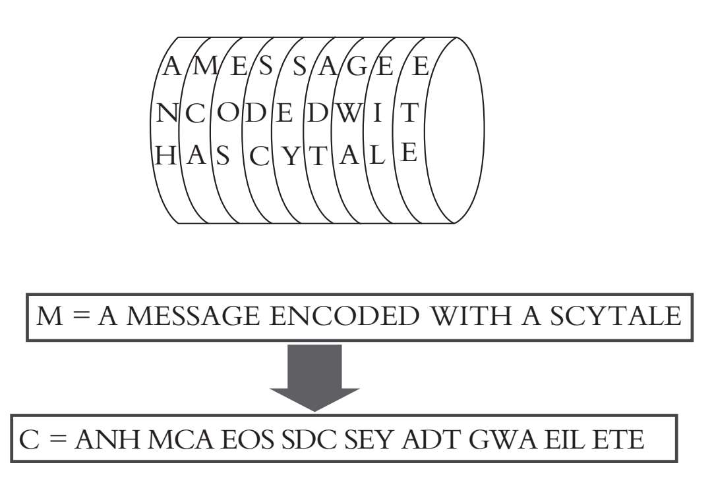
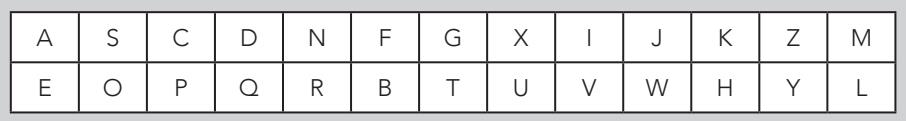

斯巴达和雅典在争夺伯罗奔尼撒半岛控制权的战争中频繁使用过一种加密方法：把长长的纸条缠在一根木棒上，即大家熟知的密码棒，然后把信息写在缠起来的纸上。即便截获了信息，敌方也知道加密的方法（也就是加密算法），但如果不知道所用密码棒的精确尺寸，解密起来也会相当困难。事实上，密码棒的粗细和长度就是加密系统的密钥，而纸条展开时，信息是完全无法辨认的。
蝇头小字
美苏“冷战”期间，有关间谍的电影总是颇具戏剧性，电影的主角通常借助一种肉眼无法辨认的媒介——缩微胶卷发送大量的信息。这一技术诞生的时间不长，“二战”期间，德国特工使用了一种叫作缩微影印的隐写技术。缩微影印包含一张印有简短文本的照片，把照片压缩到句号大小，然后把这个“句号”当成一个标点符号，插入无关紧要的文本中。
下方插图中，要传送的信息（M）为“A message encodedwith a scytale”，但纸条展开后显示的却是令人摸不着头脑的乱码（C）“anh mca eos sdc sey adt gwa eil ete”。

使用密码棒的加密方法叫作换位加密术，就是将信息的字母重新排序。要了解这种方法的原理，不妨先考虑一个简单的例子，只给三个字母换位：A、O和R。不用计算，通过快速试验，大家可以发现重新排列这三个字母最多有6种方式：AOR、ARO、OAR、ORA、ROA和RAO。
用抽象的术语表达，过程如下：有三个字母时，先确定其中一个字母的位置，会有三种不同的排列方式，剩余两个字母，会有两种不同的排列方式，总数为3×2=6。如果信息稍长一点，比如十个字母，排列的情况是：10×9×8×7×6×5×4×3×2×1。这样的运算用数学符号“10！”表示，一共有3 628 800个不同的排列方式。通常，n个字母有n！个不同的排列方式。所以，如果一条信息中含有40个字母，就会产生超多的不同排列方式，纯手工解密几乎是不可能完成的。那是否可以说，我们已经找到了完美的加密方式呢？
女性必读
古印度典籍《爱经》是一部专为女性而作的冗长手册，书中探讨了如何让女人成为一个好妻子，当然还有其他内容。这本书的内容得自公元前4世纪左右的古文稿，作者是婆蹉衍那，书中推荐了64种不同的技能，包括音乐、烹饪和象棋。第45项提到的密写（mlecchita-vikalpa）的艺术尤其令我感兴趣。《爱经》的作者博学多识，推荐了几种方法，比如将字母表分成两部分，然后随机配对。在这个系统中，每个字母的配对代表一把“密钥”。如下表所示：

要写秘密信息，就必须要把原文中的A用E代替，P用C代替，J用W代替，等等，反之亦可。
并非如此。实际上，虽然随机换位算法安全性更高，但解密的密钥不方便使用，加密和译解过程中的“随机”既是优势也是劣势。此时需要另外一种加密方法，密钥简单又好记，还方便传递，也不用牺牲大量的安全性。于是乎，人们就开始搜寻完美的算法，首位成功者是一名罗马独裁者。